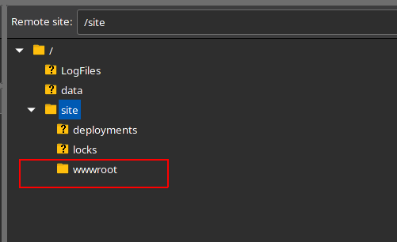

Deploying PHP and MySQL to Azure [free tier]
This post will go over the steps of deploying PHP to Azure. This environment should only be used for development/learning purposes only!
Why use Azure?
With PHP being a backbone to small development or just for learning, finding free places to host is huge. Though with that said, many bank on the simplicity of 000webhost or other free providers. Even though simplicity is great, stability is a major factor. This will guide you on how to install:
- PHP 7.4
- Enabling MySQL and phpMyAdmin
On a free tier of Azure’s App Service.
Accessing Azure
To access Azure go to: portal.azure.com. You will need to sign in via a Microsoft Account.
TIP: If you are a new user to Azure, they may introduce you to the platform.
Creating a resource group
On the home page of the Azure Portal we can create a new resource by clicking Create a resource. This may look different for users with customized home portal pages. This will create a new group to make new resources within.

Configure the resource group
When creating a new resource group, you can name and change the hosting region it depending on your environment. For example we could name it after a class like done so below:
Then follow the dialog to the Review + Create screen. Once you’ve reviewed the name of this resource group you can create it. After the resource is created you can click on it to view the resource group.
Create a new resource
Now that we have a resource group is created we want to make a new resource. This can be done by clicking the Add button near the menu bar as shown below:
Selecting a Web App
After clicking on the create resource we can select the Web App service as shown below. Don’t click on the Quickstarts + Tutorials, that will open documentation!
Creating the Web App
This next step will allow us to configure the Web App Service. As we want to use PHP, let’s select the runtime stack to the latest PHP version (7.4 is the latest the Azure currently offers at the time of this post).
Also give your new Web App Service a name, like for example naming it after yourself and a class you may be in.
Lastly make sure this is running in Windows, published via Code, and is the selected region is the same as the resource group. Also make sure this is running on the Free F1 tier of Azure. Once this is all complete click Next.
Disable Monitoring
Because this is a free tier monitoring isn’t available. Then let’s Review + create this new app service by clicking the blue button at the bottom.
Deployment Progress
Once the you’ve reviewed and created this new Web App Service, the next screen will show the deployment progress. This progress can take a moment, just wait for a check mark under the deployment details.
Once the new app service is deployed successfully, you can click into it. This will show a dashboard with:
- URL to the PHP site.
- Charts about the inbound and outbound data traffic.
Enabling MySQL
To enable MySQL, you can scroll down to the Setting category (or you can use the Search feature with Ctrl+/) and its called MySQL In App and click to manage it. Then click the MySQL In App toggle button to enable it. It may take a minute to actually enable in the background.
Using PHPMyAdmin
By default PHPMyAdmin shouldn’t need to be installed, although through the App Service you can go Extensions -> PHPMyAdmin you can do this if you’d like. Keep in mind that to access PHP my admin the URL goes as follows:
https://[site name here].scm.azurewebsites.net/phpmyadmin/
So for this tutorial the URL would be:
https://brendanfuller-cis355.scm.azurewebsites.net/phpmyadmin/
Troubleshooting: PHPMyAdmin Failed to Connect?
If you attempt to access the PHPMyAdmin while your “PHP Web Service” is in sleep mode you might come across this error:
mysqli_real_connect(): (HY000/2002): An attempt was made to access a socket in a way forbidden by its access permissions.
You just need to boot the Web App Service again. This can be performed by going to a new tab and just viewing the site. This will boot the application up and PHPMyAdmin will work again though make sure to refresh it.
Using FTP
The last part to actually uploading PHP code is where to do so. Now if you want to use git or other methods of code deployment, go for it. Though for most common people FTP, or in this case SFTP (Secure File Transfer Protocol) will be used.
Accessing FTP is as simple as going to the App Service, and in the Deployment Category click Deployment Center. Do not click the one that says classic! This will take a second or more to load.
FTP Credentials
Next we can click the FTP credentials tab to view the credentials, like shown below:
Connect to FTP
Next we would like to connect to FTP using a FTP client. FileZilla or WinSCP are very well made clients that can do SFTP (which is something that we need).
Now to connect with these credentials, for example in FileZilla we would use the follow connection setup:
File Tree
Once connected to FTP, at least in FileZilla you will see a file tree. The wwwroot is where the main folder/directory where the code is located.
Now you will see a file list for the wwwroot directory. Any files in here will be accessible via the URL of the site.
PHP and MySQL Credentials
Lastly you may want to use the MySQL server in some PHP code. The fastest way to do this is to include the file below (call it like db.php). The comments in the file explain the parameters and usage:
<?php
/*
Get Azure local MySQL database connection information
Original Author: https://medium.com/@niravmadariya/azure-mysql-in-app-for-app-services-bcea588108b6
Array Output:
$CONN["database"] = Database
$CONN["data_source"] = Server Address (server's ip address, which will be local)
$CONN["user_id"] = Username
$CONN["passsword"] = Password
Usage:
//In some db.php file
<?php
//Include the azure data into the db.php file
include_once("./azure.php");
$CONN = getAzureMySQLInfo() //Now get the connection information
//ORM or MySqli connection can be made here with the new connection info...
?>
*/
function getAzureMySQLInfo() {
$CONNECTION_ENV = getenv("MYSQLCONNSTR_localdb"); //Get the enviroment variable for the var
$CONNECTION_ENV_EXPLODE = explode(";",$CONNECTION_ENV); //Split at the semi colons to seperate
$CONN = array(); //Make a new array
foreach($CONNECTION_ENV_EXPLODE as $key=>$value){ //Loop over the entries
//Get the key to be a lowercase, no spaced string that can be easily used.
$k = strtolower(str_replace(' ', '_', substr($value,0,strpos($value,'='))));
$CONN[$k] = substr($value,strpos($value,'=')+1); //Set the value to the key, and repeat
}
return $CONN;
}
?>
If you would like to see an example of the output as a PHP var dump, you can view it here:
That’s it!
Now there should be a fully functioning website with PHP and MySQL! Tell me what you create in the comments below!